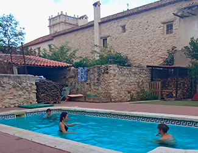
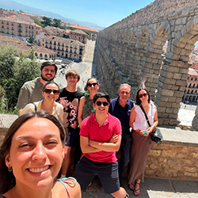
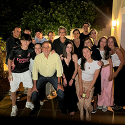
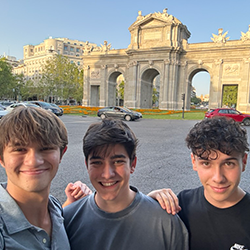
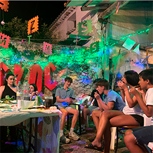

The People
The House
The Gascueña family lives in a medium size Spanish house in the center of Nuevo Baztán. The house has two stories and a large backyard-patio with a pool and dinner table that is shared with the neighboring house which is inhabited by Gonazlo’s grandmother. We spent many afternoons and evenings relaxing in the classic Spanish manner in the house, whether it be playing Spanish card games or lounging by the pool. Like many European homes, the house did not have air conditioning (an evil circumstance in the middle of July), so that first night of sleep in Spain was a rude awakening for an American who can’t sleep unless the temperature is just perfect.
Family
Gonzalo lives at home with his two parents and three older sisters: Alejandra, Lorenza, and Jimena. Although I mainly spent time with Gonzalo as he is my age, I also hung out with each of the other members of the family. I spent hours after lunch drinking coffee with Gonzalo’s mother discussing cultural differences and long car rides with his sisters on the way to Segovia or Mondéjar. Each member of the family was so different, but they each embodied a different aspect of Spanish life and culture, and there was not one interaction that I did not cherish.
 Family extd.
As previously mentioned, we spent many days in Mondéjar with the family of Gonzalo’s mother. We also had one family reunion/dinner with his father’s side of the family in a town not far from Nuevo Baztán. All three groups of the same family living in such close proximity, as well as with many children of similar ages, meant that their bonds were strong, and I could feel the constant love and familiarity between cousins and aunts and uncles and grandparents.
Friends
Some of the most fun I had in Spain was hanging out with Gonzalo’s friends, most of whom lived in Mondéjar or Alcalá de Henares. They all endeavored to show me the most of Spain while providing me with a welcoming and friendly environment. From days at the local pool to an all-nighter in Alcalá de Henares after an all-dayer in Madrid, I really got to know Gonzalo’s friends, and now consider them my own friends.
 Spaniards
Whether it be the Gascueña family, Gonzalo’s closest friends, or some server at a restaurant, I noticed some of the same quirks and qualities in every Spanish person I met.
First, they are all very friendly and welcoming. Coming from France, where I got dirty looks every other minute for my broken French, it was shocking to hear everyone saying that my Spanish was excellent and not getting peeved when I made a mistake.
Additionally, the Spanish, in their national pride, are confusingly sectional and divisive within their own country. I often heard Madrileños talking bad about Catalans or Andalucians hating on Basques, and I found it quite comical to find that they live only an hour's drive away from each other.